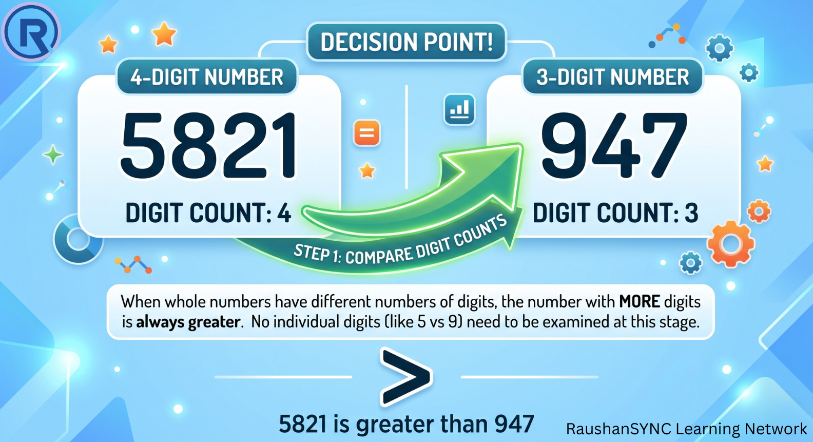
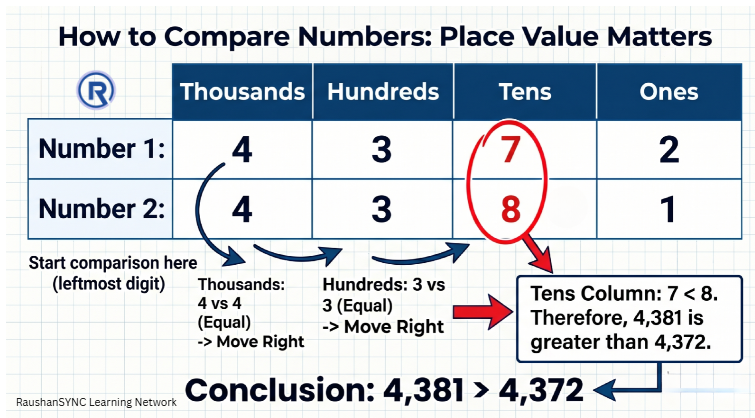
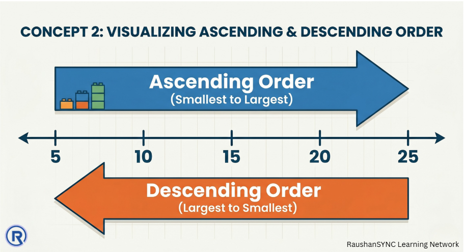

Part 1: Introduction to Number Systems
Class 6 · Chapter 1 · Patterns in Mathematics
1. Big Picture Overview
This chapter opens a conversation about something you have been doing since childhood — working with numbers. But now the goal shifts. Instead of just using numbers to count or calculate, you will begin to reason about them.
The central questions here are: How do we decide which of two numbers is larger? How do we organise a collection of numbers into a meaningful order? And when we have very large numbers, how do we read, write, and think about them without losing track of their size?
This is not about memorising rules. It is about developing a logical sense of how numbers behave — so that even when you encounter a number you have never seen before, you can confidently place it, compare it, and understand it.
The ideas in this part lay the groundwork for everything that follows in the chapter: large numbers, estimation, and numeration systems all depend on understanding what makes one number greater or smaller than another.
2. Core Concepts
Concept 1 — What Does It Mean for One Number to Be "Greater"?
a. Intuitive Explanation
Think about counting. When you count: 1, 2, 3, 4, 5 — each number that comes later represents a larger quantity. The number 5 means you have counted further than 3. In that sense, the number that appears later in the counting sequence is always the greater number.
Now, when we write numbers in our decimal system, the digits and their positions carry information about quantity. A number with more digits represents a larger quantity — because each additional digit position multiplies the value by ten.
This is the key insight: digit count tells us about magnitude before we even look at individual digits.
b. Formal Idea
When comparing two numbers, if one number has more digits than the other, the number with more digits is always greater.
If two numbers have the same number of digits, comparison must be done digit by digit, starting from the leftmost digit (the highest place value). The first position where the digits differ decides which number is greater — the one with the larger digit at that position is the greater number.
c. Deep Explanation
Why does more digits mean greater value?
Consider a 3-digit number and a 4-digit number. The smallest 4-digit number is 1000, and the largest 3-digit number is 999. Since 1000 > 999, any 4-digit number is automatically greater than any 3-digit number.
This works because our number system is positional — the value of a digit depends entirely on where it sits. The leftmost position always carries the greatest weight.
When two numbers have the same digit count, the leftmost digit carries the most value. So if that digit differs between the two numbers, the comparison is already decided. If it is the same, we move one place to the right and repeat the reasoning — because all digits to the left are equal, those positions cancel out, and the decision falls to the next differing position.
This is not a trick. It is a logical consequence of how our number system is structured.

d. Common Misconceptions
Misconception: "A number with a big digit like 9 must be greater than one with a small digit like 1."
Why it feels correct: We associate larger digits with larger values in everyday thinking.
Why it is incorrect: The digit 9 in the ones place makes the number worth far less than the digit 1 in the thousands place. A single 1 in a higher position outweighs many 9s in lower positions.
Correct way to think: Position matters far more than the size of the digit itself. The place value of the position always determines the digit's contribution.
Misconception: "If both numbers have the same first digit, they must be equal or very close."
Why it feels correct: The most visible digit is the same, so students assume the numbers are similar.
Why it is incorrect: Two numbers can begin with the same digit but differ dramatically in subsequent positions. For example, 9100 and 9999 both start with 9, but they differ by 899.
Correct way to think: When the first digits match, comparison continues to the second digit, then the third, and so on — until a difference is found.
e. Conceptual Connections
This concept connects directly to place value — which will be explored more deeply in the next section. The reason digit count determines magnitude, and the reason leftmost digits are compared first, is precisely because of how place values are assigned in our decimal system.
f. Visual Support

Concept 2 — Ascending and Descending Order
a. Intuitive Explanation
Imagine arranging a group of children by height — shortest to tallest. That is ascending order in physical form. Now imagine reversing it — tallest to shortest. That is descending order.
With numbers, the same logic applies. Ascending means going from the smallest value toward the largest. Descending means going from the largest toward the smallest.
b. Formal Idea
Ascending order is the arrangement of numbers from the smallest to the largest value.
Descending order is the arrangement of numbers from the largest to the smallest value.
c. Deep Explanation
To arrange numbers in either order, you must first be able to compare any two of them — which is exactly what Concept 1 teaches. So ordering is not a separate skill; it is comparison applied repeatedly across a group of numbers.
A useful strategy: first identify the number of digits in each number. Those with fewer digits come before those with more digits in ascending order. Among numbers with the same digit count, use the left-to-right digit comparison method to rank them.
Notice that ascending and descending order are mirror images of each other. Once you have arranged a set in ascending order, reading it backwards gives you descending order.
Why does this matter? Ordering numbers is a fundamental form of organisation. It helps us identify the smallest or largest value quickly, understand ranges, and make comparisons across large data sets — skills that extend far beyond mathematics into science, economics, and everyday decision-making.
d. Common Misconceptions
Misconception: "Ascending means going from large to small because 'ascending' sounds like ascending stairs which go up — and going up feels like going to bigger things."
Why it feels confusing: The word "ascending" does suggest upward movement.
Why it is actually correct the other way: In mathematics, the number line moves from smaller values on the left to larger values on the right. Ascending along this line means moving rightward — from smaller to larger. So ascending order = smallest to largest.
Correct way to think: Ascending = increasing. Like climbing a staircase where each step is a higher number. You start low and go higher.
e. Conceptual Connections
Ascending and descending order are directly linked to the concept of the number line (explored in the chapter on Whole Numbers), where numbers are placed spatially in increasing order from left to right.
f. Visual Support

3. Important Distinctions
| Situation | Method |
|---|---|
| Numbers with different digit counts | More digits = greater number. No further comparison needed. |
| Numbers with the same digit count | Compare digit by digit from left to right. First difference decides. |
| Numbers that are identical | They are equal. Neither is greater. |
4. Concept Checkpoints
These are thinking questions. Work through them slowly — do not rush to an answer.
- Can a 5-digit number ever be smaller than a 4-digit number? What does your answer tell you about the relationship between digit count and value?
- Two numbers share the same first three digits. What does this tell you about how close or far apart they might be in value?
- If you rearrange the digits of a number, do you always get a different number? Can you construct an example where rearranging digits produces both the largest and smallest possible values from those digits?
- When you arrange a set of numbers in ascending order and then reverse the list, have you done extra work, or did you get descending order for free? Why?
5. Chapter-Level Mental Model (for this section)
Every comparison between numbers comes down to a single underlying idea: in our number system, position carries weight, and the leftmost position carries the most weight.
Comparing numbers is not about "eyeballing" them. It is about systematically working through their structure — checking the most significant position first, and moving right only when positions are equal.
Ordering numbers is simply this comparison process applied to an entire group, carried out logically and systematically.
The skill being built here is structured reasoning under a rule — learning that mathematical decisions are not guesses; they follow from principles that always hold.
Continue to Part 2:
▶ Large Numbers, Place Value, and Numeration Systems